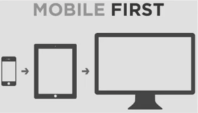

Todos los elementos de la interface tienen que ser flexibles y
responsivos. Referencia de Ethan Marcotte, las cajas deben reflejar el
ancho y alto en valores relativos.
Propiedades max-width, min-width, max-height y min-height
Se deben definir los max y min como valores fijos (px, em, rem, ex,
etc.) o como porcentaje de viewport. En caso de existir width y/o
height como valores fijos predominan a min-width y max-width
respectivos. Si no se asigna width entonces es responsiva entre los
limites de max-width y min-width.
Elementos multimedia son todas aquellas etiquetas html que no son
texto. En Responsive Design la multimeda debe ser flexible y adaptarse al tamaño de su contenedor y se logra con las reglas css
Sus propositos son mejorar el rendimiento de carga, al colocar la misma imagen en diferentes tamaños y pesos. Dependiendo del tamaño o resolución del monitor. Siempre se coloca la de menor peso primero. Ejemplos de srcset y de sizes
<img class="no-print" src="assets/img/html5-3d-600.png" alt="Logo de Html 5"
srcset="assets/img/html5-3d-600.png 1x,
assets/img/html5-3d-900.png 1.5x,
assets/img/html5-3d-1200.png 2x">
<img class="no-print" src="assets/img/html5-3d-600.png" alt="Logo de Html 5"
srcset="assets/img/html5-3d-600.png 600w,
assets/img/html5-3d-900.png 900w,
assets/img/html5-3d-1200.png 1200w">
<img class="no-print" src="assets/img/html5-3d-600.png" alt="Logo de Html 5"
srcset="assets/img/html5-3d-600.png 600w,
assets/img/html5-3d-900.png 900w,
assets/img/html5-3d-1200.png 1200w"
sizes="(max-width: 480px) 300px,
(max-width: 600px) 480px,
(max-width: 768px) 600px,
(max-width: 1024px) 900px,
(min-width: 1200px) 1200px">
webp es un tipo de formato propuesto por Google que trata de ser una mejor solución de imagen para los jpg y para los gifs animados con un mayor peso, en el siguiente caso el media del picture no evaluara el tamaño, sino el soporte de un tipo de imagen en esta caso de webp.
Un contenedor div con la clase .c5-responsive-video contiene al tag de video. Forma antigua
<div class="c5-responsive-video">
<video src="assets/media/DUST IN THE WIND - Kansas.mp4" controls></video>
<div>
.c5-responsive-video {
position: relative;
margin: 0 auto;
max-width: 80%;
height: 0;
/* Formato widescreen 16:9 por regla de 3
16 --> 100% o el max-width de 80%
9 --> x = 56.25%
*/
padding-bottom: calc(80% * 9 / 16);
}
.c5-responsive-video > * {
position: absolute;
width: 100%;
height: 100%;
}
Forma nueva de video responsivo. aspect-ratio toma valores separados por la /, eje.: 4 / 3, 16 / 9, 1 / 1
<video src="assets/media/DUST IN THE WIND - Kansas.mp4" controls class="c5-aspect-ratio-4-3"></video>
.c5-aspect-ratio-16-9 {
aspect-ratio: 16 / 9;
}
Iframes responsivos
Usados para mandar a llamar un mapa, video de youtube, widget de red social. Por defecto los navegadores le asignan un width de 150px, entonces se debe asignar la forma antigua o la nueva
@media screen and (max-width: 480px) and (orientation: portrait) {
/* Código CSS que se aplicará cuando se cumpla la media queries */
}
@media print {
@page {
size: A4 portrait;
size: A4 landscape;
}
html,
body {
background: none;
/* zoom: 1.665; */
}
h1 {
font-size: 20pt;
/* Forzar que encabezado sea siempre el comienzo de una pagina */
page-break-before: always;
}
h1, h2, h3, h4 {
/* Evitar interrupciones directamente despues de un encabezado*/
font-weight: bold;
page-break-after: avoid;
}
h2 { font-size: 18pt; }
h3 { font-size: 16pt; }
h4 { font-size: 14pt; }
p { font-size: 14pt; }
.noprint, .landscape {
margin: 0;
padding: 0;
border: none;
background: none;
overflow: hidden;
}
.landscape {
transform: rotate(-90deg) scale(0.68, 0.68);
transform-origin: 0 0;
/* page-break-after: always; */
page-break-inside: avoid;
}
.noprint, .no-print, .noprint * {
display: none !important;
height: 0;
}
pre { white-space: pre-wrap; }
img, svg, video, iframe, figure {
max-width: 100%;
height: auto;
vertical-align: middle;
page-break-inside: avoid;
}
.newpage {
page-break-before: always;
}
}
/* @media screen and (prefers-reduced-motion: no-preference) { */
@media screen and (prefers-reduced-motion: reduce) {
html {
scroll-behavior: smooth;
scroll-behavior: auto;
}
}
@media screen and (prefers-color-scheme: dark) {
html {
background-color: black;
color: yellow;
}
}
@media screen and (prefers-color-scheme: light) {
html {
background-color: white;
color: darkblue;
}
}
@media screen and (prefers-color-scheme: no-preference) {
html {
background-color: greenyellow;
color: darkred;
}
}
Propiedad
Definición
min/max
width
El ancho del área de visualización
✔
height
El alto del área de visualización
✔
device-width
Ancho de la superficie de representación del dispositivo.
✔
device-height
Alto de la superficie de representación del dispositivo.
✔
orientation
Acepta los valores de portrait (vertical) y landscape (horizontal).
✖
aspect-ratio
Relación entre la anchura de la zona de visualización de toda su altura.
Por ejemplo: en una computadora de escritorio, se podría consultar si la ventana del navegador se encuentra en una relación de 16:9.
Cuando en las media queries se aplica min-width se esta aplicando el diseño Mobile-First (primero se piensa en el Mobile) del valor que se de hacia arriba, en tanto que aplicando max-width se aplica el diseño Desktop First (primero se piensa en el Desktop) del valor de max-with hacia abajo. No mezclar Mobile First y Desktop First en un diseño
@media screen and (min-width: 480px) {
body { background-color: lightgreen }
}
@media screen and (max-width: 1024px) {
body { background-color: lightgoldenrodyellow; }
}
Tabletas pequeñas, como el Amazon Kindle (600×800) y Barnes & Noble Nook (600×1024), en modo vertical y telefonos de gama alta en modo horizontal.
600px/16px = 37.5em
768px
Tabletas de diez pulgadas como el iPad (768×1024), en modo vertical.
768px/16px = 48em
1024px
Tabletas como el iPad (1024×768), en modo horizontal, así como algunas pantallas de ordenador portátil, netbook, y de escritorio.
1024px/16px = 64em
1200px
Para pantallas panorámicas, principalmente portátiles y de escritorio.
1200px/16px = 75em
En el sitio web screensiz.es puede revisarse las caracteristicas fisicas con la que se fabrican los dispositivos.
Importante! Convierta los breakpoints a EMs
Aunque los pixeles se consideran una unidad de medida absoluta, en realidad son unidades relativas a la resolución de pantalla del dispositivo que lo visualiza, si dicho dispositivo tiene una densidad mayor a la normal, entonces la proporción de los pixeles cambiará, por ello es importante que los breakpoints de las media queries se conviertan a ems que si son unidades relativas y proporcionales.
El viewport tiene 6 atributos importantes, de los 6 atributos mencionados, hay 2 que son muy importantes definir el ancho y la escala inicial, para que el contenido se adapte al tamaño del dispositivo.
Adicionalmente se recomienda que no se especifique la máxima escala, ni bloquear la capacidad de escalar el contenido, ya que independientemente de que el documento se diseñe con responsive, algunos usuarios con capacidades visuales diferentes, podrían tener problemas al ver el contenido y desearían aumentar el tamaño del contenido, si definimos una escala máxima o bloqueamos la capacidad de escalar el contenido produciremos en estos usuarios una mala y frustrante experiencia de usuario.
La propiedad del alto es opcional definirla, se utilizara cuando necesitemos condicionar el alto del contenido.
Por lo anterior la etiqueta meta viewport tendría que definirse de la siguiente manera:
width: define el ancho visible, suele usarse la constante device-width para que se adapte al ancho del dispositivo.
height: define el alto visible, suele usarse la constante device-height para que se adapte al alto del dispositivo.
initial-scale: define la escala inicial a la que deberá visualizarse el contenido, siendo 1 el 100%.
minimum-scale: define la escala mínima a la que se podrá hacer zoom al contenido, por ejemplo si se configura .5 significa que se podrá hacer un zoom de hasta el 50%.
maximum-scale: define la escala máxima a la que se podrá hacer zoom al contenido, por ejemplo si se configura 3 significa que se podrá hacer un zoom de hasta el 300%.
user-scalable: define si el usuario puede escalar o no el contenido, sus valores son yes por defecto y no para bloquear esta propiedad.
Son reglas CSS que consultan al navegador si soportan o no una determinada propiedad o valor.
@supports (display: grid) { /* CSS que se aplica cuando se cumple la Feature queries */ }
@supports (grid-template-columns: subgrid) {
.soporta-subgrid {
background-color: darkolivegreen;
color: white;
}
.no-soporta-subgrid-span {
color: darkolivegreen;
display: none;
}
}
@supports not (grid-template-columns: subgrid) {
.no-soporta-subgrid {
background-color: black;
color: yellow;
}
.soporta-subgrid-span {
color: black;
display: none;
}
}
Los operadores soportados son and, or, not
En caso de no soportar subgrid - Se diferencia al ver en ChromeMozilla
Container Queries
Considerado la evolución del responsive design. puede revisarse en Can i use: Container.
Los Container Queries, permiten hacer componentes responsivos de interfaz de usuario, que no dependan del tamaño de la pantalla y las media queries para cambiar o adaptar el diseño de su contenido. Sino que dependan de sus propias necesidades de visualización.
Configuración a agregar a Chrome para ver un soporte parcial chrome://flags
layout activa la capacidad de container queries, inline-size para trabajar con los ejes del contenedor y style para modificar cualquier propiedad CSS involucrada
Es el paradigma actual del diseño web. Son un conjunto de buenas prácticas a nivel de código CSS para adaptar el contenido del documento HTML al tamaño de pantalla del dispositivo que lo visualice.
Tiene 3 principios:
Las media queries se deben definir de la mayor a la menor. Se utiliza la propiedad max-width para definir las media queries.
Mobile First (Progressive Enhancement)
Las media queries se deben definir de la menor a la mayor.
Se utiliza la propiedad min-width para definir las media queries.

Adaptive Design
El Adaptive Design, trata de crear interfaces que se adapten a las capacidades y características de cada dispositivo (Hardware y Software).
Hardware: Memoria, teclado, mouse, voz, sensores.
Utiliza programación JavaScript para los cambios en la interfaz.
Además podría tener diferentes fronts dependiendo de los dispositivos que soliciten el recurso, por ejemplo:
El Responsive Design + Server Side Components (RESS), trata de crear interfaces que se adapten a las capacidades y características de cada dispositivo (Hardware y Software).
Pero a diferencia del Adaptive Design, la programación que usa esta del lado del servidor. Las interfaces se crean desde el backend, lo que permite usar la misma vista (ruta) para todos los dispositivos.
Predecible.- Las reglas se van a comportar como se espera que lo hagan.
Reutilizable.- Factible de uso en otras secciones o elementos de forma rápida, sin afectar a terceros elementos
Estable.- Poder actualizar o modificar con facilidad sin afectar otras reglas css
Escalable.- Cuando un sitio o una aplicación crece se dice que es escalable y el codigo css debe seguir siendo facil de mantener y sin aumento significativo del grado de complejidad.
Se debe diseñar Sistemas, no Páginas
Componentes.- "Es un patrón visual repetitivo, que se puede resumir en un fragmento independiente de HTML, CSS y posiblemente JavaScript”.
Divide y vencerás (D.R.Y - Don't Repeat Yourselft) No te repitas a ti mismo.-
Cumplen una sóla función. Las piezas bases tienen que ser muy específicas
Son independientes. Si se quita o se agrega a la interfaz no debe afectarse la interfaz.
Son autocontenidos. Siempre se entiende el contenido, ej.: bloque de formulario de autenticación, bloque de logo, bloque de menu, bloque de formulario de busqueda.
Son reutilizables. Form de login podría trasladarse a otro proyecto y funcionar con ligeros cambios, pensando en lo general e ir a lo particular.
Todo esto de los componentes y la organización es lo que forma la arquitectura CSS. Sin embargo para crear un flujo escalable, óptimo, reutilizable y ordenado de la arquitectura se debe servir de las herramientas CSS
Son marcos de trabajo que nos ofrecen componentes y utilidades de UI. Los más importantes son Bootstrap, Tailwind, Foundation (era mejor que Bootstrap pero se a quedado), Materialize, UI kit (mucho impulso sobre todo con react) y Bulma (puro CSS no js)
960 Grid System
No existía responsive design, basado en floats, padre de Bootstrap
Semantic UI
Se basa en la semantica html a diferencia de Bootstrap
Bootstrap
RECOMENDADO. Predominante durante más de una decada. Ocupa la primera posición en frameworks de front end css
Tailwind CSS
En incremento de popularidad, muy necesario de aprenderlo.
Foundation
Primero en usar breakpoints en ems en lugar de px, un mes menor más joven que Bootstrap, versión para web y para email market, sitio con videotutoriales
Materialize
Creado y diseñado por Google, primero en no usar jquery, ideal para formularios
UI kit
Popular programadores de react, requiere css minificada, js y js de libreria de iconos.